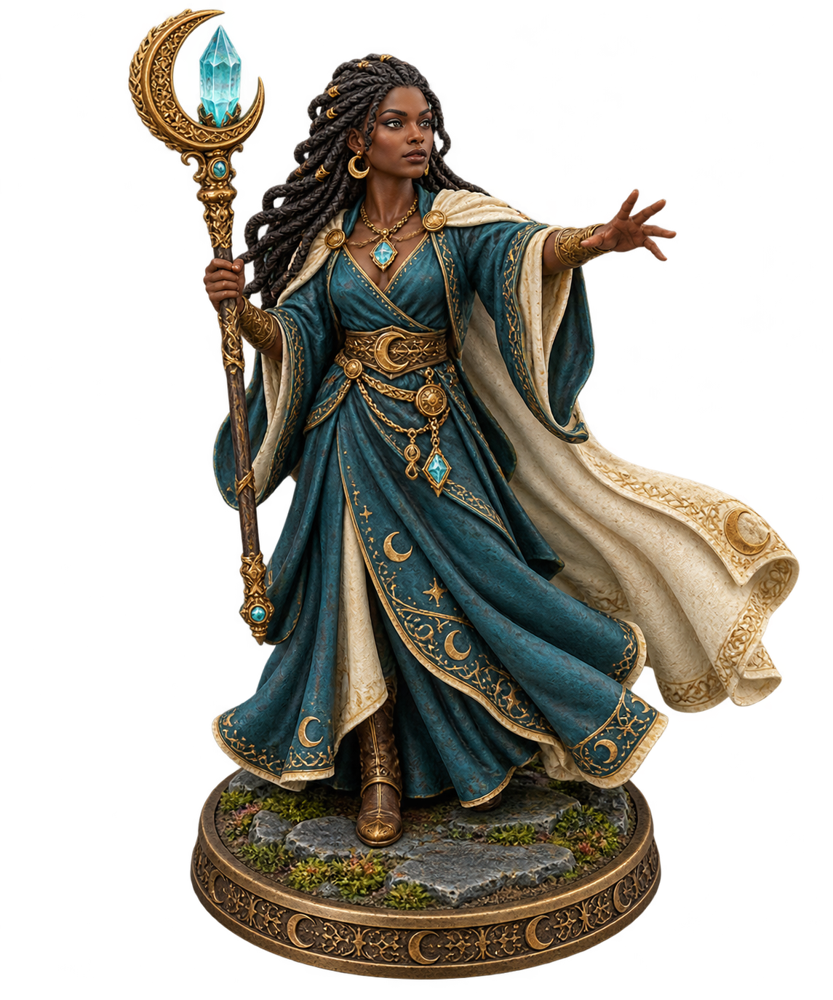
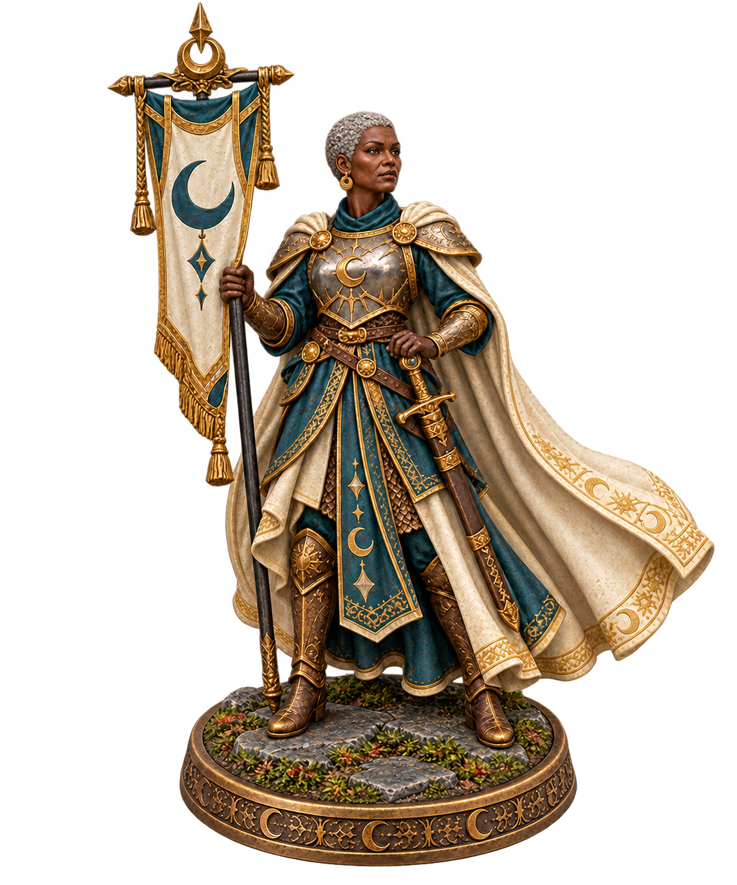
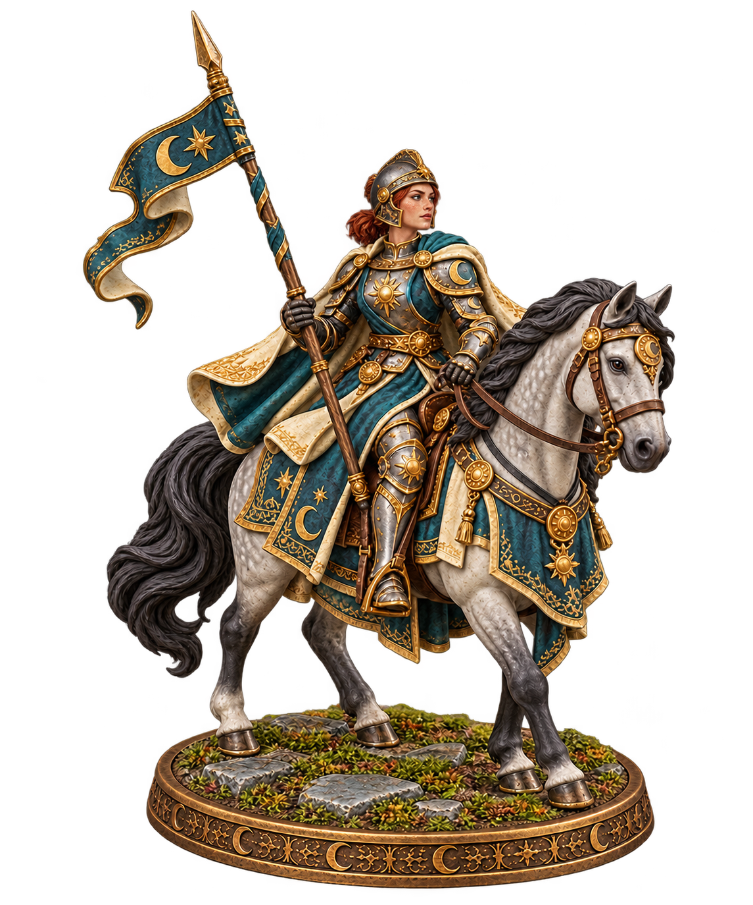

Seren
The mage: long dark braids, teal robes and her crescent crystal staff.

SEREN · FACE DETAILSeren remains unchanged. The Commander and Rider now have distinct ages, faces, hair and headgear.
The mage: long dark braids, teal robes and her crescent crystal staff.

SEREN · FACE DETAILAn older career commander: short silver hair, a broader face and a seasoned expression.

COMMANDER · FACE DETAILA younger cavalry soldier: auburn hair, freckled skin and an open-faced steel helmet.

RIDER · FACE DETAIL